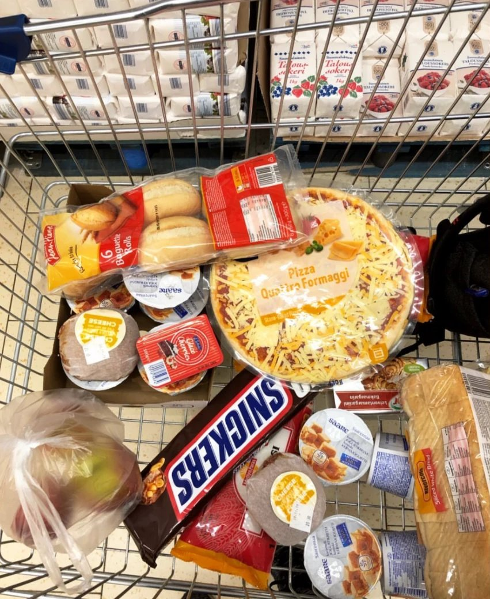

Before I moved to Finland, people warned me about the cold. Nobody really warned me about the dark. In the middle of winter, the sun rose late and disappeared again in the early afternoon. Some days I walked to class in the dark and came home in the dark, and the hours in between felt short and grey.
At first, I tried to live the way I always had. I kept the same schedule, expected the same energy, and felt frustrated with myself when I couldn’t keep up. I thought something was wrong with me. It took me a while to understand that nothing was wrong. I was simply asking a winter body to live a summer life.
Learning to wait
Winter in Finland doesn’t hurry for anyone. The snow comes when it comes, the light returns slowly, a few minutes each day. There is nothing you can do to make spring arrive faster. You can only wait, and decide how you want to spend the waiting.
That was my first lesson in patience. Not the kind of patience where you grit your teeth and push through, but a softer kind: accepting that some seasons are slower, and that slow doesn’t mean stuck. Looking back, many quiet things were growing during those dark months, even when I couldn’t see them.
Learning to take care of myself
The second lesson was about care. Back home, I rarely thought about how small habits affected my mood. In the dark months, I had to. I started going outside around midday, when there was at least a little light, even if it was just a short walk. I kept my room warm and bright in the evenings. I tried to sleep and wake at the same time, and to eat proper meals instead of skipping them when I felt tired.

None of these things were big. But together, they made the difference between days that felt heavy and days that felt manageable. I learned that taking care of myself isn’t something I do once I have time. It’s what gives me the energy to do everything else.
What stays with me
When the light finally started coming back, I noticed how much I had changed. I was a little more patient with the world, and a lot more patient with myself. I had stopped expecting every day to feel the same, and started paying attention to what I needed instead.
I think every first winter teaches something, wherever it happens. Mine taught me that it’s okay to slow down when life gets darker, and that the light always comes back, a few minutes at a time.
— Chi